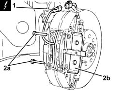
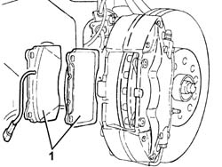

3310A62 FRONT BRAKE PADS - REPLACE WITH WHEELS REMOVED
- Path
- Procedures > 33 BRAKING SYSTEM > 3310 DISC BRAKES > 3310A FRONT DISC BRAKES > 3310A62 FRONT BRAKE PADS - REPLACE WITH WHEELS REMOVED
- Kind
- repair procedure (removal / refitting; the operation number is the code)
- Applies to
- engines: 3.2 V6; all production periods
- Interactive page
- https://sloeber94.github.io/elrnDB-aGt/en/#/125001321
Applies to: engines: 3.2 V6; all production periods
 Removing
Removing
 Refitting
RefittingEnsure that the ignition key is in the OFF position, then disconnect the negative battery terminal (-).
Name | Connector | |
|---|---|---|
- | Battery | See A1B BATTERY ( BATTERY NEGATIVE ) |
1. Disconnect the electrical connections for the brake pad wear cable.
Name | Connector | |
|---|---|---|
1 | Left brake pad wear sensor switch | See K20 LEFT BRAKE PAD WEAR SENSOR SWITCH ( FRONT ) |
2. Remove the pins (2a) and remove the stop (2b).

Applies to: engines: 3.2 V6; all production periods
1. Remove the front brake pads.

Applies to: engines: 3.2 V6; all production periods
Refitting
RemovingCompress front brake caliper pistons.
Refit the front brake pads.
Refit the stop in its seating and secure it with the pins.
Connect the electrical connection for the brake pad wear cable.
Connect the negative (-) battery terminal